Marble is beautiful but it can be very expensive. So when you can't afford to install the "real McCoy", a great alternative is to faux paint the surface to resemble real marble.
Marble comes in many styles, colors and design so your choices are endless when it comes to choosing one for your home. However, it’s best to keep the busy looking designs to surfaces other than walls. Why? Because the busy designs can clash with the decor in the room.
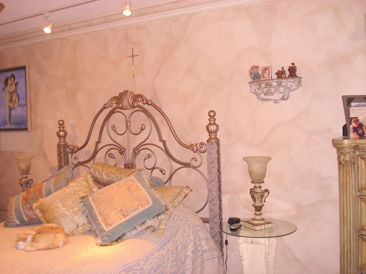
Therefore, faux painting a marble finish that doesn’t have too many veins on a wall is a good idea. Keep the intricate designs for counter tops, vases and other smaller surfaces.
Any surface can be painted if properly prepared. All slick surfaces should be lightly sanded (use a mask) and then primed with a good low odor primer. A good primer we have used is Bulls Eye Low Odor primer, which you can find at most home improvement stores.
Surfaces like columns and counter tops are transformed into beautiful works of art by painting a faux marble finish on them. You can instantly add value to your home or office this way. We recommend adding a clear top coat to counter tops, especially if they will be used a lot.
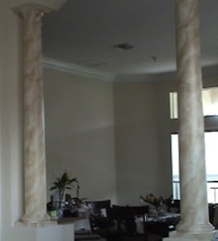
The columns pictured here were faux painted with the look of Alba Chiara marble in just one color.
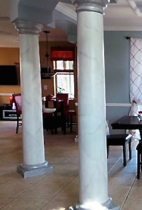
These columns pictured above, were faux painted to resemble Gray Chiara.
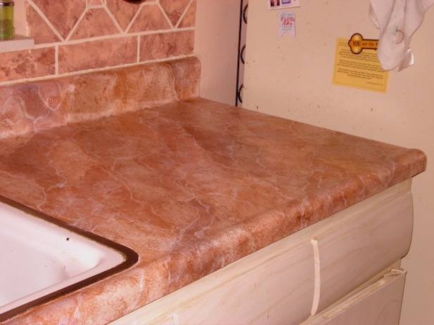
This counter top was faux painted like the popular Breccia Marble.
There are many ways to achieve a marble faux finish but some methods can be very time consuming, especially when painting a large area like a wall. One way how to paint is to take a brush, dip it into a tray of colored glaze, blot the excess and proceed to paint diagonal sections on the wall, blotting the areas with a cheesecloth or rag. You must wait till it is completely dry to add another color. Carrying up the tray of paint is not easy neither is leaving the tray on the floor and having to make multiple trips up the ladder to apply the glaze.
*Includes the Basic Kit, Faux Marble DVD, Set of feathers, Color Suggestions E-book and FREE Faux Marble Vein Guides. The files will be emailed to you as soon as your order is shipped.
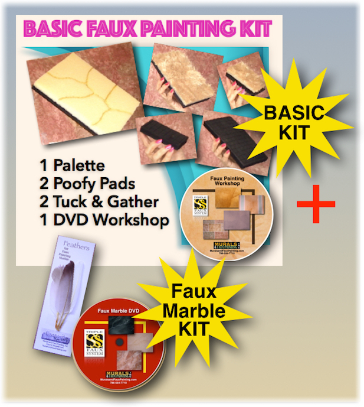
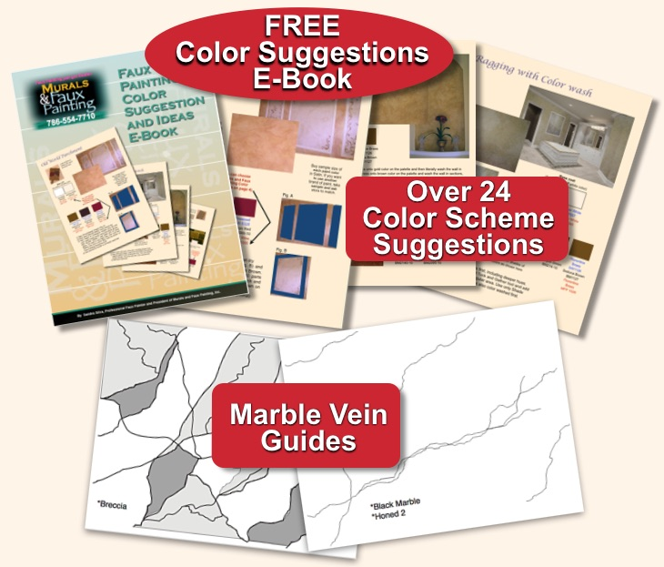

Hi, Your video has been very good thus far and I have done a Marble sample board which I believe is just fantastic. Thanks again for your help and your product. Craig ⭐⭐⭐⭐⭐
These are the 7 different types of marble that are taught on the video. They include Breccia, Black Marble, Alabaster, Alba Chiara, Grey Chiara and 2 types of Honed Marble. You will learn step by step how to faux paint these finishes on your surfaces. Transform your counter tops, columns and walls.
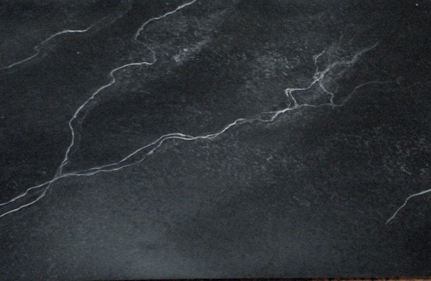
Black marble - Base coat is black with white glaze on top.
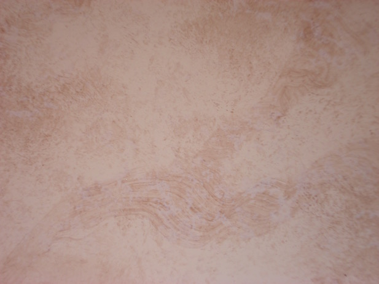
Unpolished marble - Base coat is off white with a tan and white glaze on top.
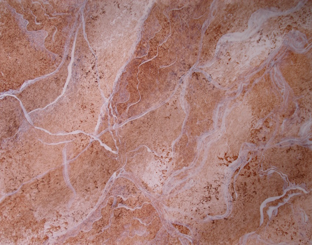
Breccia marble - Base coat is off white color with 3 colors of glaze on top.
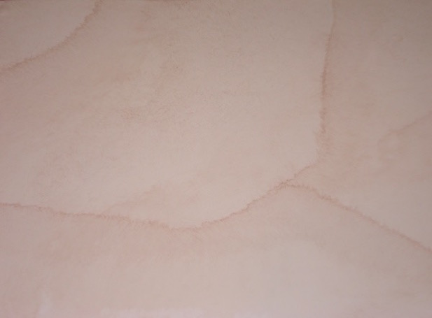
Alabaster marble - Base coat is a white color with a tan glaze on top.
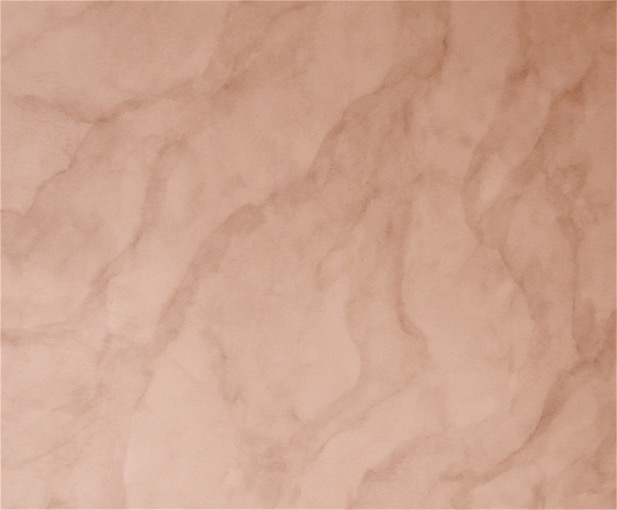
Alba chiara marble - Base coat is light tan with a darker tan glaze on top.
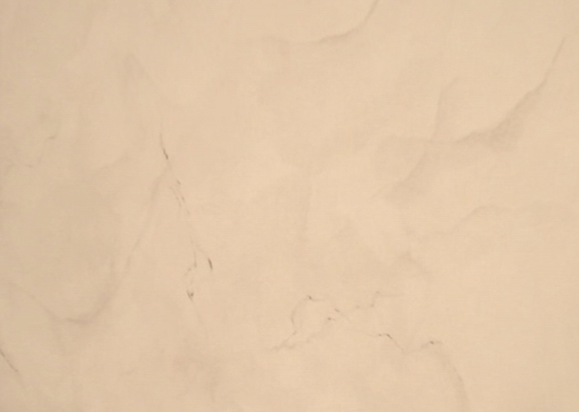
Gray chiara marble- Base coat is light gray with a darker gray glaze on top.
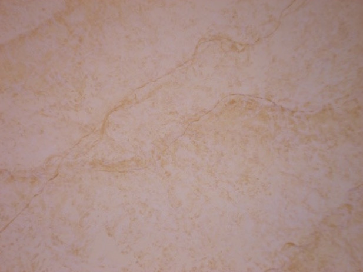
Honed marble - Base coat is off white with a white and golden color on top.
Other methods teach you maybe a couple of ways how to faux paint marble. Some require expensive brushes and tools, also. Using the Multi Color Faux Palette, that is included with the Basic Kit and the Marble Combo kit, as well as the Poofy Pad eliminate the need for expensive tools. In addition, you will learn a variety of ways to achieve a marble finish.
The Basic Faux Painting Kit aslo has a Faux Painting Workshop on DVD, which will enable you to learn other faux finishes, too.